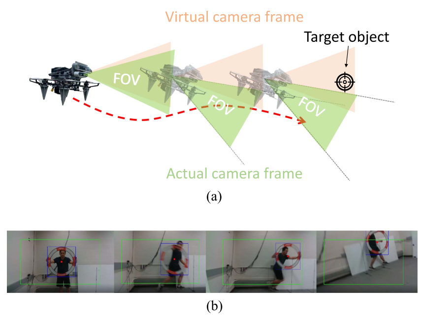
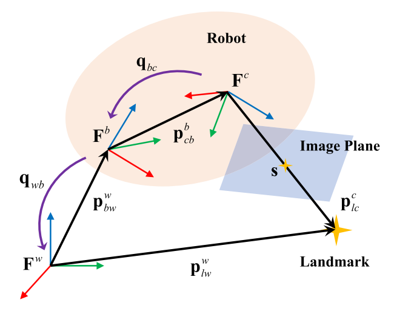
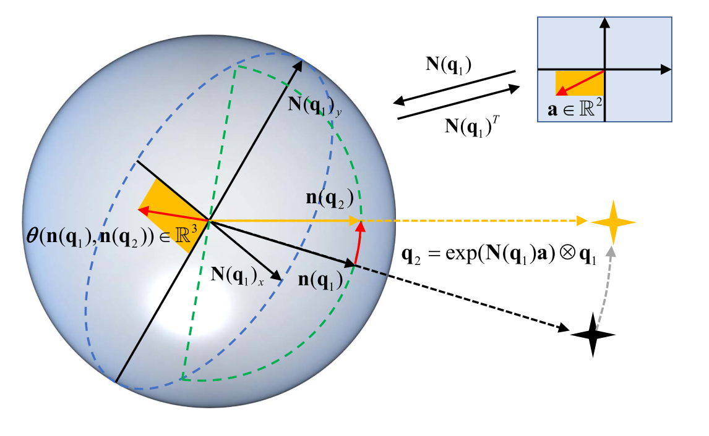
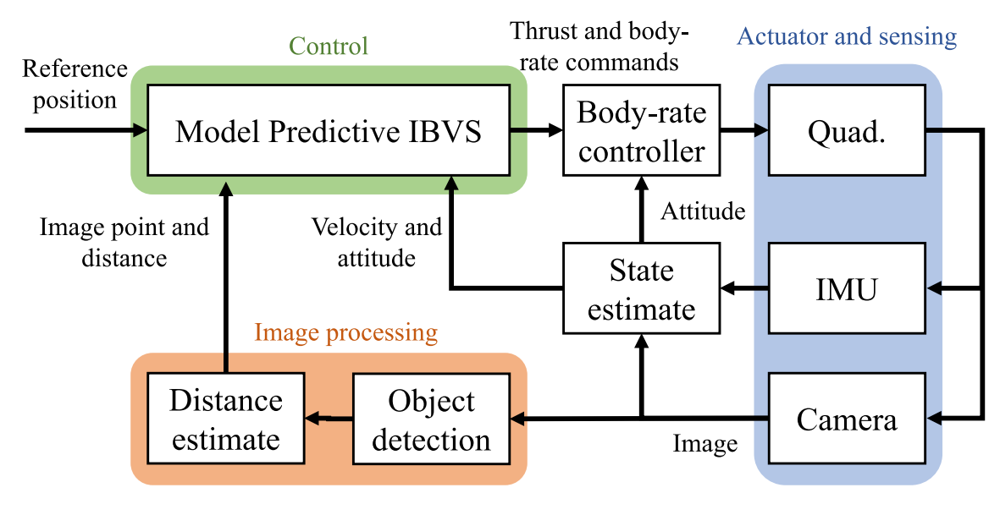
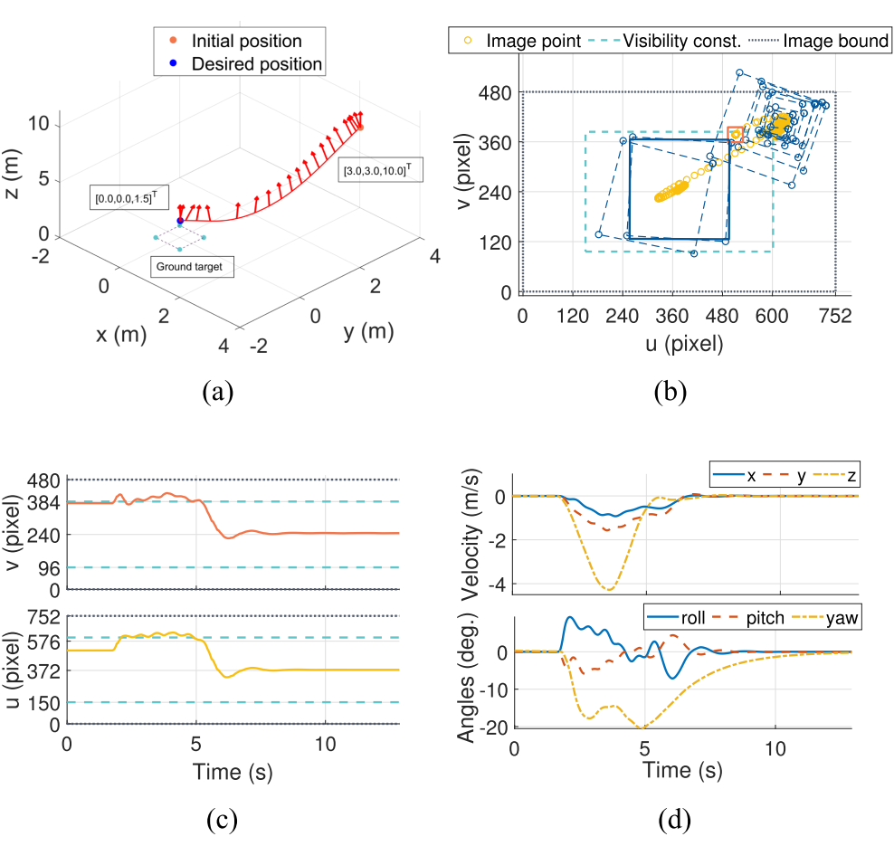
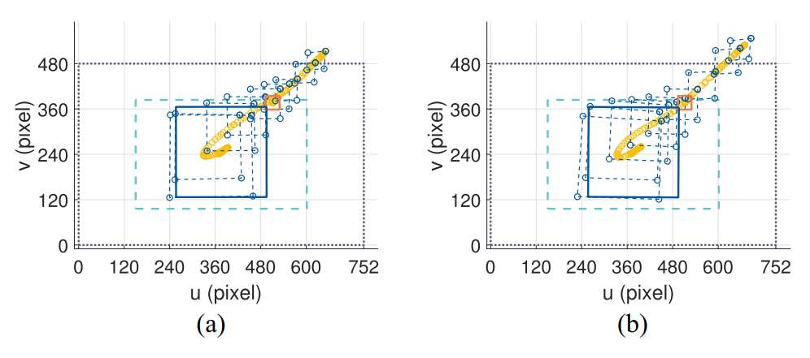
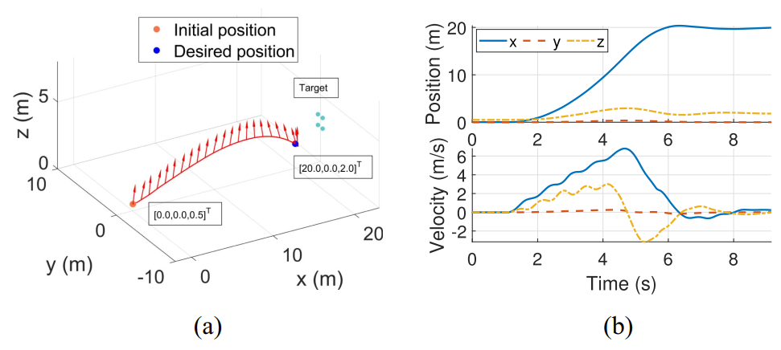
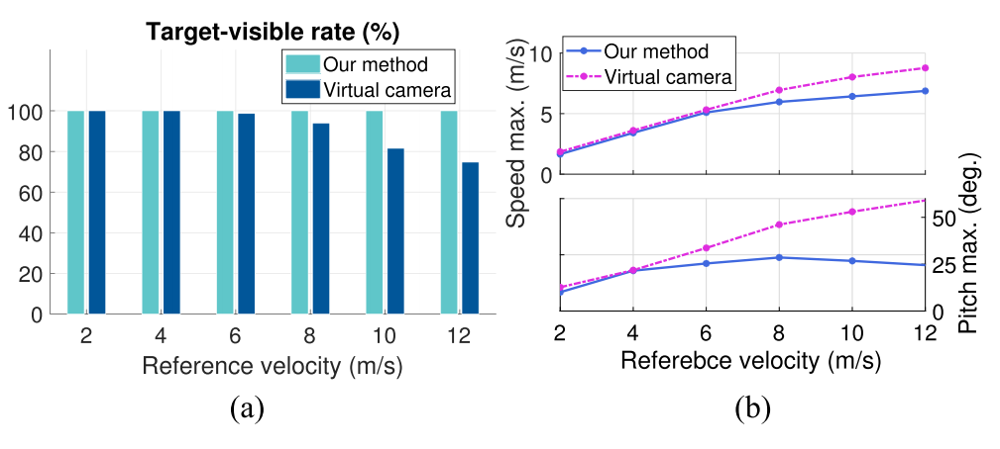
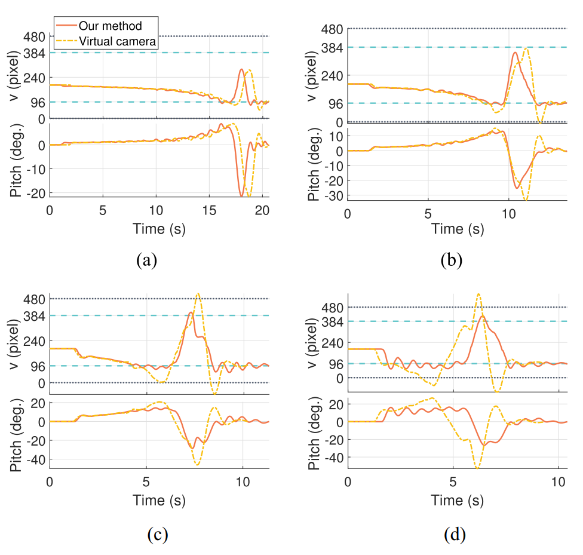
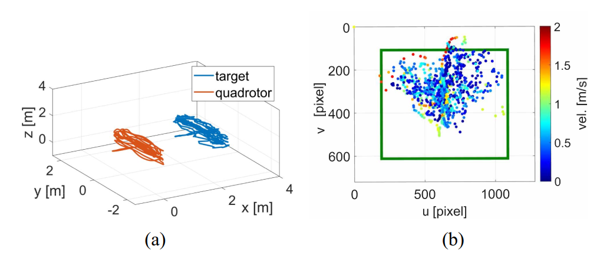

| 标题 | Perception-Aware Image-Based Visual Servoing of Aggressive Quadrotor UAVs（感知感知的图像视觉伺服用于 aggressive 四旋翼无人机） |
| 作者 | Chao Qin（秦超，多伦多大学）、Qiuyu Yu（余秋雨，上海交通大学）、H. S. Helson Go（多伦多大学）、Hugh H.-T. Liu（通讯作者，多伦多大学） |
| 单位 | 多伦多大学（University of Toronto）航空航天研究所（UTIAS），上海交通大学航空航天学院 |
| 发表 | IEEE/ASME Transactions on Mechatronics，2023年8月，Vol. 28，No. 4，pp. 2020–2028 |
| 链接 | 10.1109/TMECH.2023.3276211 | 投稿: 2023-01-06 | 录用: 2023-05-10 | 发表: 2023-05-31 | 代码: GitHub | 视频: YouTube |
| 核心贡献 | 提出一种感知感知的鲁棒 IBVS 方案，解决四旋翼在 aggressive 机动中目标特征容易离开相机视场的核心难题。基于 NMPC 框架，设计了欠驱动补偿机制消除虚拟相机帧需求，从而在真实图像平面定义目标可见性约束；引入四元数球面视觉特征表示处理 2-球面上的非光滑向量场问题。在快速着陆、aggressive 长距离飞行、动态目标跟踪三个任务中实现 100% 目标可见率，最大俯仰 21.04 度、最大速度 6.87 m/s。 |
| 灵感来源 | 所启发的洞察 | 类型 |
|---|---|---|
| 虚拟相机方法的"可见性悖论"（Fig. 1a）——目标在虚拟相机 FOV 内但已离开真实相机 FOV | 虚拟相机方法的根本缺陷不是约束设计问题，而是特征变换丢失了真实相机旋转信息。解决方法是让 NMPC 在真实图像平面预测特征坐标并施加约束——即"先预测再补偿"范式 | 架构 |
| Bloesch et al. (2015) 视觉惯性里程计——用四元数参数化球面上的点以实现光滑 EKF 更新 | 将四元数球面参数化迁移到 IBVS 的特征表示——用四元数 q 表示球面视觉特征，定义 SO(3) 上的 box-plus / box-minus 算子，推导光滑的图像运动学模型，避免 2D 最小表示的奇异性问题，也避免 3D 单位向量的"毛球定理"非光滑问题 | 数学 |
| NMPC 的预测能力——可以在有限时域内前向预测系统状态 | 将视觉特征坐标作为 NMPC 状态变量（连同四旋翼动力学和 range 动力学），在前向预测时间窗内评估每个离散点的可见性约束，使 MPC 能够"预见"特征即将出界并提前调整姿态 | 方法 |
| TTC（预计碰撞时间）在人类感知和机器人栖停中的应用（Zhang et al. 2018） | 将 TTC 约束引入 IBVS——不是简单的距离约束，而是 r / r_dot 的下界约束，既能避免碰撞，又能平滑减速，防止近距离急刹车导致的大幅旋转失稳和视野丢失 | 策略 |
s_min < s(q) < s_max 直接作用于真实像素坐标。动作目标函数中用预测的未来姿态 C(q_wb) 对视觉特征进行旋转补偿，而非预先将特征旋转到虚拟平面。q_dot = N(q)^T * (-n(q)^wedge * v_c / r - omega_c)，雅可比矩阵在整个 S^2 上均光滑。r_dot = -n(q)^T * v_c，每一步都传播更新。引入 TTC 约束 r / r_dot ≥ t_c_min（或 r_dot < 0 时自动满足），既保证碰撞安全，又实现自然平滑减速。
flowchart TB
subgraph 感知层["感知层：视觉特征提取"]
direction LR
相机["针孔相机 · 1280x640 px · 30 Hz"]
检测["YOLOv5 目标检测器 · 赛门边界框"]
特征["球面特征提取 · 像素坐标 ➜ 3D单位向量 · ◆ ➜ 四元数 q"]
距离["距离估计 · r = f*d_gate/max(w,h)"]
end
subgraph 控制层["NMPC 层：ACADO + qpOASES 求解器"]
direction LR
模型["全状态 IBVS 系统模型 · x = [v_w, q_wb, q, r] · u = [c, Omega_b]"]
预测["前向预测 · 1.0s 时域 · dt=0.05s · 20 节点"]
约束["约束评估 · 执行器限制 · 真实可见性约束 · TTC 约束"]
目标["目标函数 · 动作代价 + 感知代价 · 预测姿态旋转补偿"]
求解["RTI 方案求解 · 准备阶段线性化 · 反馈阶段 QP · 5-10 ms"]
end
subgraph 执行层["飞行控制层"]
direction LR
指令["推力 c + 角速率 Omega_b · 直接低层驱动 · 无级联姿态环"]
飞控["角速率 PID · PixRacer 飞控 · 跟踪 Omega_b 指令"]
电机["电机混合 · 各旋翼推力分配 · 最大推力 20N · 最大角速率 3.0 rad/s"]
end
相机 --> 检测 --> 特征 --> 距离
特征 --> 模型
距离 --> 模型
模型 --> 预测 --> 约束 --> 目标 --> 求解
求解 --> 指令 --> 飞控 --> 电机
电机 -.->|"状态反馈: v_w, q_wb"| 模型
特征 -.->|"视觉反馈: q, r"| 模型
classDef sensing fill:#fef7ed,stroke:#f59e0b,stroke-width:2px,color:#92400e
classDef control fill:#e8f0fe,stroke:#3b82f6,stroke-width:2px,color:#1d4ed8
classDef actuator fill:#e6f7ee,stroke:#10b981,stroke-width:2px,color:#047857
class 相机,检测,特征,距离 sensing
class 模型,预测,约束,目标,求解 control
class 指令,飞控,电机 actuator
flowchart TB
subgraph 输入["系统输入"]
direction LR
视觉目标["视觉目标 · 赛门/地面标记点 · 4个共面点"]
参考轨迹["参考轨迹 · 期望位置 p_ref · 期望速度 v_ref · 期望图像坐标 s_ref"]
end
subgraph 感知管线["感知管线"]
direction LR
原始图像["原始图像 · 752x480(仿真) / 1280x640(实验)"]
目标检测["目标检测 · YOLOv5 边界框 · d_gate=75cm 已知"]
球面投影["球面投影 · s ➜ mu = K^{-1}s / ||K^{-1}s||"]
四元数转换["四元数转换 · mu ➜ 旋转向量 phi ➜ 四元数 q"]
end
subgraph 优化求解["NMPC 最优控制问题"]
direction LR
前向预测["前向预测 · 1.0s 窗口 · x_{k+1}=f(x_k,u_k)"]
约束评估["约束评估 · 可见性: s(q_k)∈[s_min,s_max] · TTC: r_k/r_dot_k · 执行器: u_min 原始图像
参考轨迹 --> 代价累计
原始图像 --> 目标检测 --> 球面投影 --> 四元数转换
四元数转换 -->|"q_0, r_0"| 前向预测
前向预测 --> 约束评估 --> 代价累计 --> QP求解
QP求解 --> 推力输出
QP求解 --> 角速率输出
推力输出 --> 低层驱动
角速率输出 --> 低层驱动
低层驱动 -.->|"状态测量: v_w, q_wb, q, r"| 前向预测
约束评估 -.->|"可见性违反? ➜ 调整姿态"| 前向预测
classDef inputC fill:#fef7ed,stroke:#f59e0b,stroke-width:2px,color:#92400e
classDef percep fill:#f0ebfd,stroke:#8b5cf6,stroke-width:2px,color:#6d28d9
classDef opt fill:#e8f0fe,stroke:#3b82f6,stroke-width:2px,color:#1d4ed8
classDef outC fill:#e6f7ee,stroke:#10b981,stroke-width:2px,color:#047857
class 视觉目标,参考轨迹 inputC
class 原始图像,目标检测,球面投影,四元数转换 percep
class 前向预测,约束评估,代价累计,QP求解 opt
class 推力输出,角速率输出,低层驱动 outC
flowchart TD
subgraph 阶段1["阶段一：问题设置"]
direction LR
任务定义["定义视觉伺服任务 · 快速着陆/长距离飞行/动态跟踪 · 设定参考位姿、速度、图像坐标"]
配置相机["配置相机与目标 · 着陆用下视相机 · 飞行/跟踪用前视相机 · 目标: 4个共面点/赛门"]
设置参数["设置 NMPC 参数 · 时域 1.0s · dt 0.05s · 权重 Q_p Q_v Q_q Q_s R · 可见性边界 · TTC 阈值"]
end
subgraph 阶段2["阶段二：实时 NMPC 循环 (ROS + C++)"]
direction LR
接收图像["接收图像测量 · YOLOv5 检测赛门/点 · 计算 q 和 r"]
更新状态["更新 NMPC 初始状态 · x_0 = [v_w, q_wb, q, r] · 来自 T265 里程计+视觉"]
求解OCP["求解 OCP via ACADO RTI · 准备阶段: 在当前估计解处线性化 · 反馈阶段: qpOASES 求解 QP · 5-10 ms"]
提取指令["提取第一步控制输入 · u*_0 = [c*, Omega_b*] · 发送至 PixRacer 飞控"]
PID跟踪["PID 跟踪角速率 · PixRacer 内环 · 电机混合 · ESC 输出"]
end
subgraph 阶段3["阶段三：约束监控"]
direction LR
可见性监控["可见性约束是否激活? · 检查 s(q_pred) vs [s_min, s_max] · 特征接近边界 ➜ 限制旋转"]
TTC监控["TTC 约束是否激活? · 检查 r/r_dot vs t_c_min · 接近过快 ➜ 平滑减速"]
冲突解决["约束冲突解决 · 可见性 vs 动作目标权衡 · 感知权重 Q_s 平衡 aggressiveness"]
end
subgraph 阶段4["阶段四：性能评估"]
direction LR
TVR计算["TVR 计算 · 目标可见率 = 含有特征的帧数/总帧数 · 目标: 100%"]
性能指标["性能指标 · 最大速度 · 最大俯仰/滚转 · 收敛时间 · 跟踪误差 · vs 虚拟相机基线对比"]
end
阶段1 -->|"配置参数"| 阶段2
阶段2 -->|"运行时数据"| 阶段3
阶段3 -->|"安全保证"| 阶段4
求解OCP -.->|"预测特征轨迹"| 可见性监控
求解OCP -.->|"预测距离"| TTC监控
可见性监控 -.->|"限制俯仰/滚转/偏航"| 求解OCP
TTC监控 -.->|"限制接近速度"| 求解OCP
冲突解决 -.->|"权重自适应"| 求解OCP
PID跟踪 --> TVR计算
PID跟踪 --> 性能指标
classDef phase1 fill:#fef7ed,stroke:#f59e0b,stroke-width:2px,color:#92400e
classDef phase2 fill:#e8f0fe,stroke:#3b82f6,stroke-width:2px,color:#1d4ed8
classDef phase3 fill:#f0ebfd,stroke:#8b5cf6,stroke-width:2px,color:#6d28d9
classDef phase4 fill:#e6f7ee,stroke:#10b981,stroke-width:2px,color:#047857
class 任务定义,配置相机,设置参数 phase1
class 接收图像,更新状态,求解OCP,提取指令,PID跟踪 phase2
class 可见性监控,TTC监控,冲突解决 phase3
class TVR计算,性能指标 phase4
| 类别 | 内容 | 维度 |
|---|---|---|
| 输入 | 相机图像（30 Hz）、四旋翼速度与姿态估计（T265）、目标检测结果（YOLOv5 边界框） | 图像 1280x640 px（实验）/ 752x480 px（仿真） |
| 输出 | 质量归一化推力 c 和机体角速率 Omega_b，发送至 PixRacer 飞控进行角速率跟踪 | 1D 推力 + 3D 角速率 = 4D 控制输入 |
| 目标 | 在 aggressive 机动中保持 100% 目标可见率（TVR），同时完成伺服任务（着陆、飞行、跟踪） | 最大速度 6.87 m/s、最大俯仰 21.04 度下 TVR = 100% |
这是一个控制算法创新——不是新硬件或新传感器，而是在 NMPC 框架内重新设计了 IBVS 的视觉特征表示、运动学模型和约束定义方式。三个典型任务：(1) 快速着陆——从 [3, 3, 10] m 以 4.63 m/s 最大速度降落到 [0, 0, 1.5] m，下视相机；(2) Aggressive 长距离飞行——20 m 水平飞行，前视相机，最大俯仰 21.04 度，验证可见性约束如何主动限制姿态以保护视野；(3) 动态目标跟踪——真人手持赛门在 5x4.3x3 m 室内空间中移动，四旋翼跟随，速度 1.92 m/s，滚转 14.93 度。
表头使用英文，正文使用中文
| Prior Method | Core Idea | Why It Fails |
|---|---|---|
| Virtual Camera IBVS（虚拟相机 IBVS） Zhang 2021, Zheng 2019, Heshmati-alamdari 2014 |
将检测到的视觉特征旋转到虚拟水平图像平面，获得旋转不变的图像运动学，然后在此虚拟平面设计 IBVS 控制器和可见性约束 | 特征变换到虚拟相机帧后丢失了真实相机旋转信息。即使虚拟相机 FOV 内定义了可见性约束，该约束也无法反映真实相机 FOV 中的目标位置。Fig. 1a 展示：目标在虚拟 FOV 内始终可见，但在真实相机中已出界。这是所有虚拟相机方法的结构性缺陷——不是参数调节问题，是框架本身的问题。 |
| Rotation-Invariant Feature Methods（旋转不变特征方法） Guo & Leang 2020, Fomena 2011, Tahri 2013 |
设计具有旋转不变图像运动学的特殊视觉特征（如球面三点距离、不变矩），使得特征本身不受相机旋转影响 | 不变特征虽然消除了旋转依赖，但难以表达可见性目标和约束——因为不变特征通常不是直观的像素坐标。所有此类方法都将目标可见性当作给定条件，没有显式处理视野约束。在 aggressive 机动中，目标仍可能离开 FOV。 |
| Cascaded Control IBVS（级联控制 IBVS） Zheng 2018, Sheng 2019, Mebarki 2015 |
外环 IBVS 产生速度/加速度指令，内环姿态控制器跟踪——标准的级联控制架构 | 内环姿态控制器的动态增加了响应延迟——外环计算的指令经过内环动态后才作用到机体。当目标快速移向图像边缘时，这种延迟可能导致四旋翼来不及响应。aggressive 机动中，特征可能已经出界而控制器仍在处理上一帧的指令。 |
| Fixed-Depth IBVS（固定深度 IBVS） Zhang 2021, Mcfadyen 2013 |
将目标深度设为固定值，简化图像运动学，减少状态维度 | 深度固定意味着特征预测不准确。aggressive 着陆中深度从 10 m 变化到 1.5 m，固定深度会导致预测位置偏离真实值，可见性评估失准——可能"以为"特征在安全区内但实际已出界。 |
本文的核心方法是一个基于 NMPC 的 IBVS 控制方案，包含三个关键创新：(1) 四元数球面视觉特征的运动学推导；(2) 欠驱动补偿机制——在真实图像平面施加可见性约束，在目标函数中用预测姿态做旋转补偿；(3) 动态 range 状态与 TTC 约束。
LaTeX rendered by MathJax. 显示公式用 $$...$$，行内公式用 $...$。符号解释使用中文。
| 参数 | 取值 | 含义 | 为什么取这个值 |
|---|---|---|---|
| NMPC 预测时域 | 1.0 s | 前向预测的时间窗口长度 | 足够长以"预见"特征即将出界并提前调整姿态；足够短以保证实时性（5-10 ms 求解） |
| 离散化时间步长 | 0.05 s（20 个节点） | 预测时域内的离散采样间隔 | 每个节点都评估可见性约束。20 个节点在精度和计算量间平衡 |
| NMPC 求解器 | ACADO + qpOASES | 代码生成 + 实时迭代 QP 求解 | ACADO 的 RTI 方案将非线性 OCP 转为序列 QP，qpOASES 高效求解——平均 5-10 ms |
| 最大推力 / 角速率 | 20 N / 3.0 rad/s | Hummingbird 四旋翼的执行器限制 | 仿真中 qpOASES 的 QP 类型——保证全局最优 |
| 目标检测器 | YOLOv5 | 深度学习目标检测器，输出赛门边界框 | 实时性（30 Hz）+ 高精度，满足 aggressive 飞行的感知需求 |
| 可见性约束区域 | 451x288 px（仿真）/ 绿色框（实验） | 视觉特征必须保持在此图像区域内 | 小于完整图像尺寸（752x480），留出安全裕度——一旦特征接近边界，NMPC 主动限制姿态 |
理解本文需要掌握三个关键基础原理：(1) 球面视觉特征的流形表示——为什么四元数能解决 S^2 上的光滑性问题；(2) 欠驱动系统 IBVS 的旋转-平移耦合——为什么"先预测再补偿"比"先补偿再预测"更优；(3) NMPC 中可见性约束的实时执行——RTI 方案如何实现 5-10 ms 求解。
为什么选择 2D 切空间增量而非 3D 更新？四元数有 4 个分量但 $SO(3)$ 只有 3 个自由度，球面特征点 $S^2$ 只有 2 个自由度。本文在切空间 $\mathbb{R}^2$ 中做增量（而非 $\mathbb{R}^3$），恰好匹配 2 自由度，避免过参数化的冗余约束问题。$\mathbf{N}(\mathbf{q})$ 矩阵将 $\mathbb{R}^2$ 映射到 $\mathbb{R}^3$ 切空间，再通过 $\exp$ 映射到 $SO(3)$。
工程直觉：虚拟相机方法就像"闭上眼睛做手术"——你把看到的图像旋转到一个舒服的角度，然后在这个幻想的视角下做控制，但忘记了真实的眼睛仍然在原位。本文方法则"睁着眼睛做手术"——你始终知道目标在视野中的真实位置，只是在评估"我需要怎么移动才能对准目标"时才考虑姿态的影响。
论文原图截图。图片保存至 figures/ 子目录。命名 fig1.png ~ fig8.png 即可自动显示。

请将截图保存为figures/fig1.png本图展示了整篇论文的核心动机。(a) 虚拟相机方法的根本问题：四旋翼前向俯仰后，目标在虚拟相机 FOV（粉色锥体）内仍然可见，但在真实相机 FOV（绿色锥体）中已经丢失——因为虚拟相机将特征旋转到水平面，丢失了俯仰信息。可见性约束（粉色锥体边界）因此形同虚设——目标在真实世界中已不可见，而约束仍未激活。(b) 本文方法的实验结果：aggressive 飞行穿越赛门时，视觉特征（门中心点）始终保持在指定图像区域（绿色矩形）内，证明了真实可见性约束的有效性。

请将截图保存为figures/fig2.png本图定义了全文的坐标系统。三个坐标系：世界系 $\mathcal{F}_w$、机体系 $\mathcal{F}_b$、相机系 $\mathcal{F}_c$。世界坐标系中标定点 $\mathbf{p}_{lw}^w$ 通过相机投影映射到图像坐标 $\mathbf{s}$。相机到机体的外参为 $(\mathbf{p}_{bc}^b, \mathbf{q}_{bc})$——即相机在机体中的安装位置和方向。

请将截图保存为figures/fig3.png本图展示了本文最关键的数学创新——四元数球面特征表示。3D 单位向量 $\boldsymbol{\mu}_1$（指向 landmark）被等价表示为四元数 $\mathbf{q}_1$（即 $\mathbf{n}(\mathbf{q}_1) = \boldsymbol{\mu}_1$）。矩阵 $\mathbf{N}(\mathbf{q}_1) = [\mathbf{N}(\mathbf{q}_1)_x, \mathbf{N}(\mathbf{q}_1)_y]$ 的列张成该点的切空间——使得 $\boxplus$ 和 $\boxminus$ 算子可以唯一定义。

请将截图保存为figures/fig4.png本图展示了完整的控制架构——从图像采集到目标检测（YOLOv5）、球面特征提取（s → q）、NMPC 优化求解（ACADO + qpOASES），再到低层角速率控制（PixRacer PID）和电机输出。关键架构特点：NMPC 直接输出推力和机体角速率，绕过了传统级联结构中的姿态控制器——这是实现高响应速度的前提。

请将截图保存为figures/fig5.png本图验证了可见性约束在快速着陆场景中的有效性。(a) 四旋翼以最大 4.63 m/s 的速度从 [3, 3, 10] m 成功降落到 [0, 0, 1.5] m。(b) 视觉特征从初始位置 [511, 377] px 移动到图像右上角（可见性约束边界），然后回到中心。(c) 可见性约束在 1.84-5.1 s 间活跃——此时速度和大角度旋转同时发生。(d) 最大滚转 9.30 度、俯仰 5.88 度、偏航 20.53 度。

请将截图保存为figures/fig6.png本图对比了三种情况下的视觉特征轨迹。(a) 本文方法但无可见性约束——特征直接移出图像边界，任务失败。(b) 虚拟相机方法的可见性约束——特征同样离开图像边界，因为约束定义在虚拟相机帧而非真实图像平面。这证明了两个关键结论：(1) 可见性约束是必要的；(2) 但仅仅是"有约束"不够——约束必须定义在正确的空间（真实图像平面）。

请将截图保存为figures/fig7.png本图展示了 20 m aggressive 长距离飞行的完整结果。参考速度 10 m/s 下，四旋翼以最大速度 6.87 m/s 到达目标位置，TVR 保持 100%。最大俯仰 21.04 度——在此姿态下前视相机大幅倾斜，但可见性约束有效限制了进一步俯仰以保护视野。

请将截图保存为figures/fig8.png本图是整篇论文最关键的定量对比结果。(a) 不同参考速度下的 TVR：本文方法在 4-12 m/s 的所有参考速度下均保持 100% TVR；虚拟相机方法的 TVR 从 8 m/s 起开始下降，12 m/s 时降至 74%。(b) 最大实际速度和最大俯仰角随参考速度的变化——本文方法在参考速度约 6 m/s 后开始主动限制四旋翼的 aggressiveness（速度不再随参考速度增大而增大，俯仰角被约束在约 21 度），而虚拟相机方法允许更大的旋转但以丢失目标为代价。

请将截图保存为figures/fig9.png本图揭示了可见性约束如何随 aggressiveness 增加而逐步激活。从 4 m/s 递增到 10 m/s 参考速度，展示了垂直图像坐标 v 和俯仰角的轨迹。(a) 4 m/s 时两者几乎相同——约束未激活。(b) 6 m/s 时虚拟相机方法开始有特征出界（持续 0.1318 s）。(c)-(d) 8-10 m/s 时，本文方法产生围绕约束边界的振荡轨迹，俯仰角也相应振荡——这是约束激活后的典型行为。虚拟相机方法的俯仰角更大但特征已出界。

请将截图保存为figures/fig11.png本图展示了真实硬件实验中的动态目标跟踪结果。(a) 四旋翼与目标（手持赛门）在 5x4.3x3 m 室内空间中的 3D 轨迹——跟踪成功且稳定。(b) 视觉特征在图像平面中的轨迹——颜色编码表示四旋翼速度。最大速度 1.92 m/s，最大滚转 14.93 度——在这些 aggressive 机动下，视觉特征始终保持在指定图像区域（绿色矩形）内，TVR = 100%。
| 数据问题 | 潜在困难 | 严重程度 |
|---|---|---|
| 目标检测失败（运动模糊 / 遮挡） | range 估计直接依赖边界框尺寸——检测失败意味着整个 IBVS 环路中断。在 aggressive 机动中，运动模糊尤其严重。可能的缓解：多特征冗余、特征预测在短时间遮挡内继续传播状态 | ★★★★★ |
| Range 估计误差 | $r = f_{cam} \cdot d_{gate} / \max(w_{box}, h_{box})$ 对方程假设（门直径已知、边界框紧贴、相机模型准确）非常敏感。range 不准 → 特征运动学预测不准 → 可见性约束失准 → 可能"以为"特征在安全区但实际已出界 | ★★★★ |
| 速度估计漂移（无 GPS / 弱光） | T265 在弱纹理或高速运动时精度下降。速度是 NMPC 状态的核心分量——速度误估导致整个预测失准。但相比纯视觉方案，T265 已经提供了较好的短期精度 | ★★★ |
| NMPC 权重调谐敏感 | $Q_s$（感知权重）vs $Q_p$（位置权重）的平衡直接决定 aggressiveness vs. safety。在一个场景中调好的权重可能在另一个场景中过于保守或过于激进。自适应权重是必要的后续工作 | ★★★ |
| 参考文献 | 为什么重要 |
|---|---|
| Zhang et al. (2021) — Robust nonlinear model predictive control based visual servoing of quadrotor UAVs. IEEE/ASME Trans. Mechatronics 26(2), 700-708 | 本文方法的直接对比基准——同样使用 NMPC + IBVS + 可见性约束，但基于虚拟相机框架。本文证明了其可见性约束在 aggressive 机动中无法保证真实目标可见性（TVR 降至 74%），而这正是本文的核心贡献所在。 |
| Bloesch et al. (2015) — Robust visual inertial odometry using a direct EKF-based approach. IEEE/RSJ IROS, 298-304 | 四元数球面特征表示的灵感来源——Bloesch 用四元数参数化球面特征以实现光滑的 EKF 更新，本文将此思想迁移到 IBVS 的特征运动学推导中，解决了球面表示的核心数学障碍。 |
| Falanga et al. (2018) — PAMPC: Perception-aware model predictive control for quadrotors. IEEE/RSJ IROS, 1-8 | "Perception-aware" 这一术语的来源——Falanga 在 NMPC 框架中将视觉特征可观测性作为目标函数的一部分，但未处理可见性约束。本文在此基础上进一步：将可见性作为硬约束而非软目标，提供了更强保证。 |
| Hamel & Mahony (2002) — Visual servoing of an under-actuated dynamic rigid-body system: An image-based approach. IEEE Trans. Robot. Autom. 18(2), 187-198 | 球面 IBVS 的理论基础——首次证明球面图像特征对于欠驱动系统（如四旋翼）具有良好的几何特性。本文的四元数球面特征是对 Hamel 的 3D 单位向量表示的改进——解决了光滑性问题。 |
| Houska et al. (2011) — ACADO toolkit. Optimal Control Appl. Methods 32(3), 298-312 | ACADO 工具包的原始论文——本文的 NMPC 实现基于 ACADO 代码生成 + qpOASES 求解。理解 ACADO 的 RTI 方案和代码生成机制是复现本文方法的前提。 |